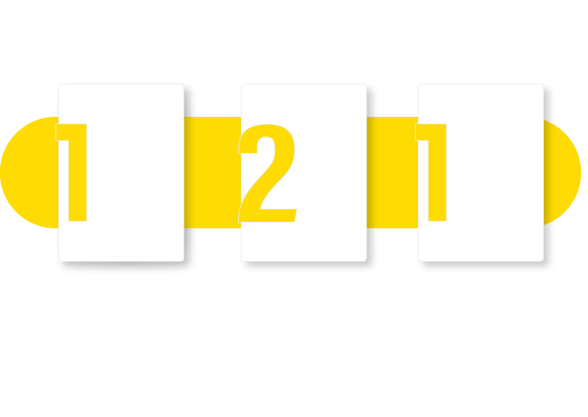
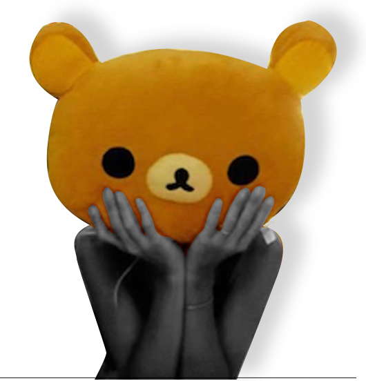
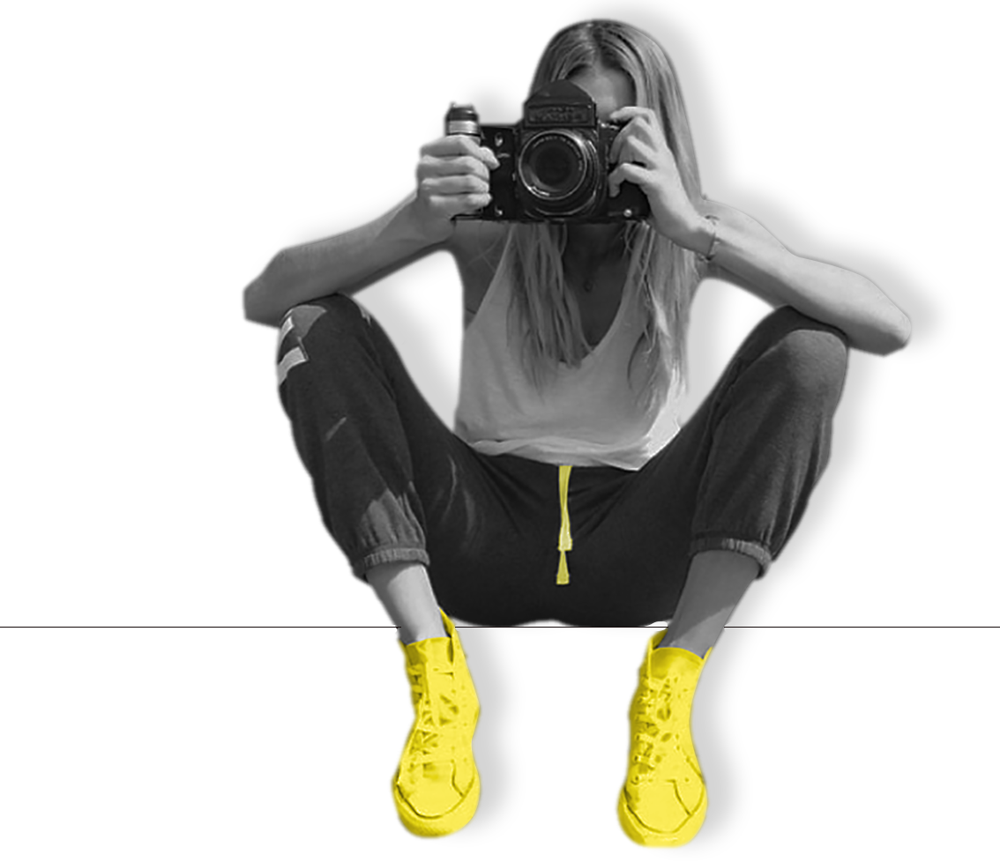

“Nuestro Éxito es que nuestros clientes logren alcanzar el Suyo”


Soy Diseñadora Gráfica graduada en la Universidad de Palermo, con formación internacional en Diseño Digital y Multimedia a través del Programa de Especialización de ELISAVA Barcelona School of Design and Engineering (Barcelona, España). Me especializo en branding, identidad visual, diseño editorial, comunicación institucional y contenidos digitales. Actualmente combino mi trabajo en el Departamento de Diseño y Comunicación del Ministerio Público Fiscal de la Nación con el desarrollo de proyectos independientes para empresas, instituciones y profesionales. También soy docente de la Facultad de Diseño y Comunicación de la Universidad de Palermo, donde acompaño la formación de futuros diseñadores. En cada proyecto busco integrar estrategia, creatividad y comunicación para desarrollar soluciones visuales claras, funcionales y alineadas con los objetivos de cada organización.
Brindo servicios de diseño gráfico y comunicación visual para empresas, instituciones y profesionales. Me especializo en branding e identidad visual, diseño editorial, comunicación institucional, contenidos digitales y diseño de interfaces web. Abordo cada proyecto de manera integral, desarrollando soluciones visuales estratégicas, funcionales y alineadas con los objetivos de cada cliente.

Si tenes alguna duda, necesitás presupuesto o simplemente querés contactarte con nosotros,
escribinos a marie.acevedo@gmail.com